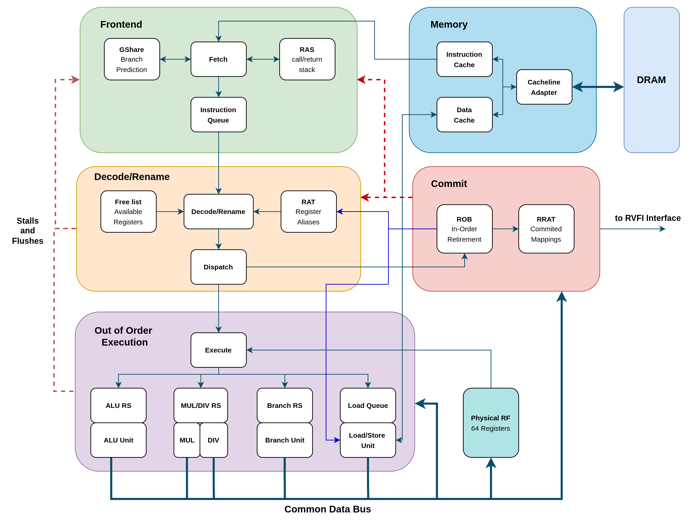

This is an out-of-order RV32IM processor written in SystemVerilog, built for ECE 411 at UIUC. It implements the explicit register renaming (ERR) microarchitecture. The instructions are fetched and decoded in order, renamed onto a larger physical register file, dispatched to reservation stations where they wait for their operands, executed out of order across multiple functional units, and finally retired in order through a reorder buffer (ROB).

The fetch stage is a two-stage pipeline. F1 presents the current PC to a line buffer and two prefetch buffers, decodes the instruction word, and immediately resolves JAL and RAS-predicted returns so the PC advances without a stall. F2 receives the branch prediction one cycle later and redirects the PC if a conditional branch is predicted taken, squashing the in-flight F1 instruction.
Branch prediction uses GShare which is an 8-bit global history register XORed with the PC indexes a 256-entry branch history table stored in an SRAM. The BHT holds 2-bit saturating counters and is updated with a read-modify-write sequence when a branch retires from the ROB. A separate return address stack handles indirect jumps. The jump calls push the return address, and returns pop and redirect to the stored address, so function call chains resolve in one cycle rather than waiting for execute.
The processor has 32 architectural registers mapped onto 64 physical registers. A register alias table (RAT) tracks the current speculative mapping from architectural to physical names. When an instruction is decoded, the destination register is renamed to a free physical register pulled from a free list FIFO, and the source registers are looked up in the RAT to determine which physical registers hold their current values. On flushes/recovery, the RAT will use the retired RAT (RRAT) to get the last valid architectural state.
The execute stage has five independent functional units, each fed by its own reservation station: an ALU for integer and immediate operations, a multiplier, a divider, a branch unit that computes the correct target and detects mispredictions, and a load-store unit with separate load and store queues. A physical register file with 64 entries is read at issue time; results are broadcast on five common data bus (CDB) channels so waiting reservation station entries can capture operands as they become available.
The load-store unit issues memory operations only when they reach the head of the ROB, enforcing store-to-memory ordering. Load results are forwarded from completed stores in the store queue when there is an address match, avoiding a round trip to the cache.
The processor has separate instruction and data caches. Both are 4-way set-associative with 16 sets and 32-byte cache lines, giving a 2 KB capacity each. They use a write-back, write-allocate policy. Replacement uses pseudo-LRU with a 3-bit tree per set that tracks which of the four ways was least recently used. Data and tag arrays are OpenRAM SRAMs instantiations.
Both caches connect to a shared DRAM through a cache adapter that handles the mismatch between the 256-bit cache-line interface and the 64-bit burst DRAM interface. Each cache line transfer takes four consecutive 64-bit beats. The adapter runs independent state machines for the I-cache and D-cache, with the I-cache taking priority when both request the bus simultaneously.
The reorder buffer (ROB) is a 16-entry circular buffer that receives one instruction per cycle at dispatch and retires instructions in program order from its head. When a branch or jump at the head is marked mispredicted, the ROB drives a flush signal that simultaneously clears all in-flight ROB entries, redirects the fetch PC to the correct target, restores the speculative GHR to the value it should have had after the branch, and restores the RAS pointer. The retiring instruction's register mapping is folded into the RRAT and free list in the same cycle so no extra stall is needed.
A retired RAT (RRAT) shadows the committed architectural state. On a misprediction flush, the RAT is restored from the RRAT in a single cycle, and the speculative free list is rebuilt from the committed free list. Dispatch stalls when the ROB is full, the free list is empty, or a reservation station has no space.